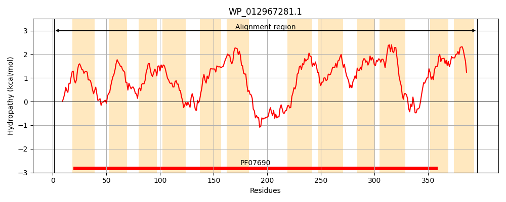
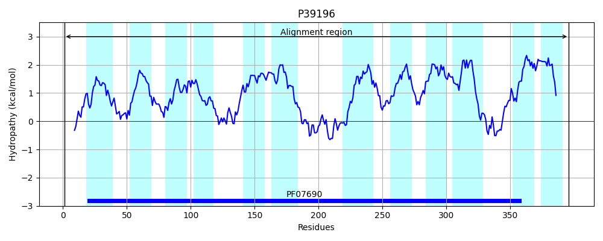
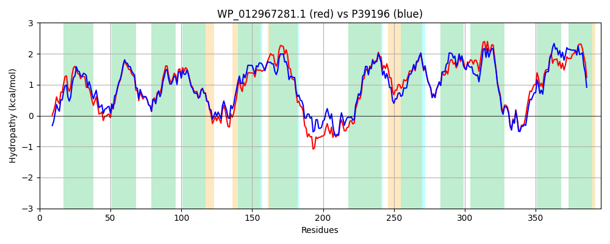

Hit Accession: P39196
Hit TCID: 2.A.1.42.1
Hit Description: gnl|BL_ORD_ID|10245 gnl|TC-DB|P39196|2.A.1.42.1 Hypothetical protein ygeD - Escherichia coli.
Mach Len: 396
e:0.000000
Query TMS Count : 12
Hit TMS Count: 12
TMS-Overlap Score: 11.550000
Predicted Substrates:CHEBI:55493;1-O-acylglycerophosphoethanolamine, CHEBI:60430;2-monolysocardiolipin
BLAST Alignment:
Score: 1702 , Bit scores: 660 bits, E-value: 0.0e+00, Alignment length: 396, Percentage identity: 82
Query: 1 MSESVHTNPSLYSKGMLAVICAQFLSAFGDNALLFATLALMKQLYYPEWSQPVLQMLFVGAYILFAPFVGQFADSFAKGRVMMVANGLKLLGAGCICFGVNPFIGYTLVGIGAAAYSPAKYGILGELTTGDKLVKANGLMESSTIAAILLGSMAGGILADWHVLAALIVCALVYGGAVVANLWIPKLPAARPGQSWRFKPMTHSFFSACRTLWRNGETRFSLMGTSLFWGAGVTLRFLLVIWVPVALGITSNAMPTYLNAMVAVGIVLGAGAAAKLVTLETVSRCMPAGILIGIAVMAFAVQQSLLPAFGLLLLLGVFGGFFIVPLNALLQERGKHSVGAGNAIAVQNLGENVAMLLMLGLYSLAVSVGVPPVAVGIGFGAVFAVAIAALWVWGRR 396
MSESVHTN SL+SKGM AVI AQFLSAFGDNALLFATLAL+K +YPEWSQP+LQM+FVGAYILFAPFVGQ ADSFAKGRVMM ANGLKLLGA ICFG+NPF+GYTLVG+GAAAYSPAKYGILGELTTG KLVKANGLME+STIAAILLGS+AGG+LADWHVL AL CAL YGGAVVAN++IPKL AARPGQSW MT SF +AC +LWRNGETRFSL+GTSLFWGAGVTLRFLLV+WVPVALGIT NA PTYLNAMVA+GIV+GAGAAAKLVTLETVSRCMPAGILIG+ V+ F++Q LLPA+ LL+L+GV GGFF+VPLNALLQERGK SVGAGNAIAVQNLGEN AMLLMLG+YSLAV +G+P V +GIGFGA+FA+AI ALW+W RR
Sbjct: 1 MSESVHTNTSLWSKGMKAVIVAQFLSAFGDNALLFATLALLKAQFYPEWSQPILQMVFVGAYILFAPFVGQVADSFAKGRVMMFANGLKLLGAASICFGINPFLGYTLVGVGAAAYSPAKYGILGELTTGSKLVKANGLMEASTIAAILLGSVAGGVLADWHVLVALAACALAYGGAVVANIYIPKLAAARPGQSWNLINMTRSFLNACTSLWRNGETRFSLVGTSLFWGAGVTLRFLLVLWVPVALGITDNATPTYLNAMVAIGIVVGAGAAAKLVTLETVSRCMPAGILIGVVVLIFSLQHELLPAYALLMLIGVMGGFFVVPLNALLQERGKKSVGAGNAIAVQNLGENSAMLLMLGIYSLAVMIGIPVVPIGIGFGALFALAITALWIWQRR 396 | Protein Hydropathy Plots: |
|---|
|  |  |
Pairwise Alignment-Hydropathy Plot:
|
|---|
|  |